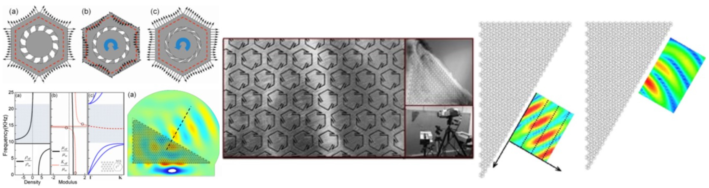

In this study, design and modeling of chiral elastic metamaterials are investigated to achieve subwavelength negative refraction of elastic waves while maintaining reasonable sample sizes. Negative effective mass density and elastic modulus occur simultaneously in the metamaterial owing to simultaneous translational and rotational resonances. We experimentally demonstrated negative refraction of the longitudinal elastic wave at the deep subwavelength scale in a stainless steel plate. Based on this concept, we designed a single-phase chiral elastic metamaterials and experimentally demonstrated negative refraction of the longitudinal elastic wave at the deep subwavelength scale in a stainless steel plate. Moreover, wave mode conversion related with negative refraction is revealed and discussed. The proposed elastic metamaterial may thus be used as a flat lens for elastic wave focusing.
The lattice system consisting of mass-in-mass (one or two inner masses) units to represent a locally resonant metamaterial is investigated by using different equivalent models. Dispersive wave propagation in those lattice systems is demonstrated and results from various equivalent models are also compared.
Both in-plane and out-of-plane guided waves in a thin plate with local resonators are studied numerically and experimentally. Through the numerical simulation, a new metamaterial plate design is achieved for a low-frequency bandgap in both in-plane and out-of-plane guided waves. Experiments were conducted to validate the numerical design.
A microstructure composed of anisotropic resonant inclusions is designed and investigated for the elastic metamaterial plate with anisotropic mass densities. The experimental validation is conducted in this anisotropic metamaterial plate through both harmonic and transient wave testing, from which the anisotropic effective dynamic mass density, group, and phase velocities are determined as functions of frequency. The strongly anisotropic mass density along two principal orientations is observed experimentally and the prediction from the experimental measurements agrees well with that from the numerical simulation.
An elastic metamaterial with multiple dissipative resonators is presented for broadband wave mitigation by properly utilizing interactions from resonant motions and viscoelastic effects of the constitutive material. Based on the novel metadamping mechanism, a microstructure design of the dissipative metamaterial made of multi-layered viscoelastic continuum media is first proposed for efficient attenuation of a transient blast wave. It is found that the extremely broadband waves can be almost completely mitigated with metamaterials at subwavelength scale.
The membrane-type acoustic metamaterial (MAM) has been demonstrated as a super absorber for low-frequency sound. A theoretical vibroacoustic model is developed to reveal sound energy reflection and absorption mechanism within the MAM under a plane normal incidence. The sound reflection and absorption of the MAM are obtained and discussed, which are also in good agreement with the prediction from the finite element method. The application of the membrane-type acoustic metamaterials for acoustic liner was also investigated.
We proposed and designed a new acoustic liner by periodically inserting the membrane-type acoustic metamaterials into a conventional acoustic liner. Both of our theoretical and numerical results demonstrate that the proposed acoustic liner can absorb the acoustic energy at much boarder frequencies compared with the conventional design. The acoustic wave is found to be almost completely absorbed in some narrow frequency regions.
The growing technological development in electro/magneto-mechanical couplings of smart materials introduced a controlling degree of freedom for passive elastic metamaterials. Active elastic metamaterials could allow fine control of the material physical behavior to induce new functional properties that cannot be introduced by the passive approaches. An active elastic metamaterial with electrorheological elastomers is suggested for the elastic wave propagation direction control based on a developed coordinate transformation method.
We report a new class of adaptive metamaterial beams with hybrid shunting circuits to realize super broadband Lamb wave band gaps at an extreme subwavelength scale. The hybrid shunting circuits are composed of negative capacitance and negative inductance elements connected in series or in parallel in order to tune the desired frequency-dependent stiffness. It is shown theoretically and numerically that by properly modifying the shunting impedance, the adaptive mechanical mechanism within the tunable resonator can produce high-pass and low-pass wave filtering capabilities for the zeroth-order anti-symmetric Lamb wave modes.
With the help of multi-physics numerical modeling, experimental validation of an adaptive elastic metamaterial integrated with shunted piezoelectric patches has been performed for the first time in a deep subwavelength scale. The tunable bandgap capacity, as high as 45%, is physically realized by using both hardening and softening shunted circuits. Transient wave propagation tests of the adaptive metamaterial subjected to impact loads are conducted to validate their tunable wave mitigation abilities in real-time.
We report the concept of a gradient piezoelectric self-sensing system by integrating shunting circuitry into conventional sensors. Both the quality and quantity of the flexural wave measurement data can be significantly increased. Specifically, more than two orders of magnitude amplification of flexural wave signals has been achieved to overcome the detection limit of conventional sensors.
This topic concerns the study of various aspects of elastic wave propagation in solid media which have a periodic microstructure. The purpose is to devise new active and passive ways to control the waves paths. A growing area of interest in particular is bidirectional wave control whereby waves incident in a given direction are steered in one way, say slowed down, and waves incoming in the opposite direction are steered in another way, accelerated for instance. Bidirectional wave control is made possible by the breaking of time reversal symmetry and brings us one step closer to the realization of revolutionary wave control devices such as elastic invisibility cloaks.
In continuum mechanics, the non-centrosymmetric micropolar theory is usually used to capture the chirality inherent in materials. However, when reduced to a two dimensional (2D) isotropic problem, the resulting model becomes non-chiral. Therefore, influence of the chiral effect cannot be properly characterized by existing theories for 2D chiral solids. To circumvent this difficulty, based on reinterpretation of isotropic tensors in the 2D case, we propose a continuum theory to model the chiral effect for 2D isotropic chiral solids.
One of the significant engineering applications of the elastic metamaterial (EMM) is for low-frequency vibration attenuation because of its unusual low-frequency bandgap behavior. A chiral lattice-based EMM beam with multiple embedded local resonators is suggested to achieve broadband vibration suppression without sacrificing its load-bearing capacity. Finally, the chiral-lattice-based EMM beam is fabricated, and experimental testing of the proposed structure is conducted to validate the design.
Based on the meta-damping concept, a sandwich beam with periodic multiple dissipative resonators in the sandwich core material is investigated for broadband wave mitigation and/or absorption. It is numerically demonstrated that a transient blast-induced elastic wave with broadband frequencies can be almost completely mitigated or absorbed at a subwavelength scale.
Concrete structures have been used widely in civil infrastructural systems. Due to the complex nature of its microstructure, nondestructive testing (NDT) of concrete inherently imposes many challenges, which can cause severe limitations to the resolution and the sensitivity of observed signals. In the study, a numerical simulation based on the Finite Element (FE) model was first performed to investigate surface wave generation and reception using piezoelectric actuators/sensors,especially at relatively higher frequency cases. The results provided a basic understanding of some features of the microstructure effects on the surface wave propagation. An experimental testing was also conducted to validate the numerical simulation.
Due to the complex nature of such composite structures, understanding of the guided wave propagation mechanism in honeycomb composite panels with different frequencies inherently imposes many challenges. We conduct the experimental and numerical study to investigate the wave propagation mechanism in honeycomb sandwich structures. A multiple debonding detection technique is developed based on the transmitted guided waves in the structure.
Ultrasonic wave propagation is one of powerful and popular methods for measuring mechanical properties of solids even at nano scales. The extraction of material constants from the measured wave data may not be accurate and reliable when waves of short wavelengths are used. The high-frequency antiplane wave propagation in ultra-thin films at nanoscale is studied. A developed continuum microstructure theory will be used to capture the effect of nanostructures in ultra-thin films. This continuum theory is developed from assumed displacement fields for nanostructures. Local kinematic variables are introduced to express these local displacements and are subjected to internal continuity conditions. The accuracy of the theory is verified by comparing the results with those of the lattice model for the antiplane problem in an infinite elastic medium.
The objective of this topic is to extend the framework of the continuum theory so that it can capture the properties that are embedded in the microstructure or nanostructure and still keep its simplicity and efficiency. The model thus developed is capable of accounting for local deformation of microstructures in solids especially their micro- (local) inertia effect. The essence underlying this approach is the introduction of a set of bridging functions that relate the local deformation of microstructures to the macrokinematic variables. Propagation of waves of different wavelengths is considered and the dispersion curve is used to evaluate the accuracy of the model. The model is also employed to study wave reflection and transmission at the boundary of two media with microstructures of very different scales.